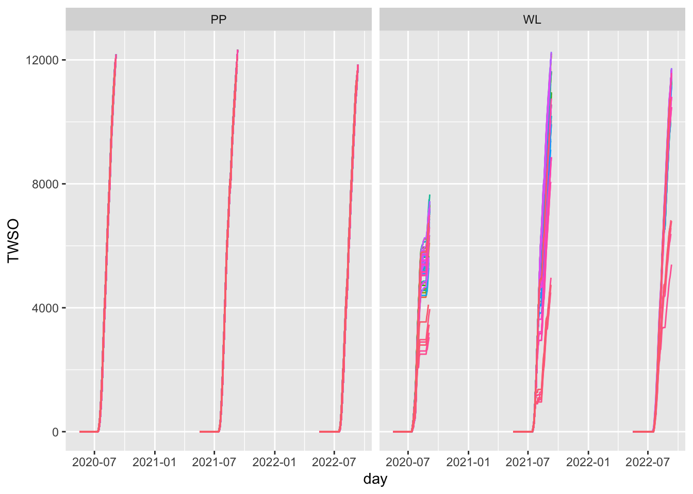
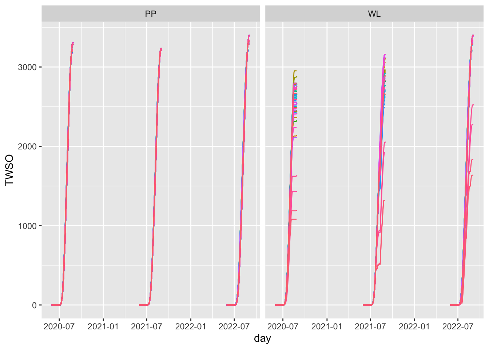
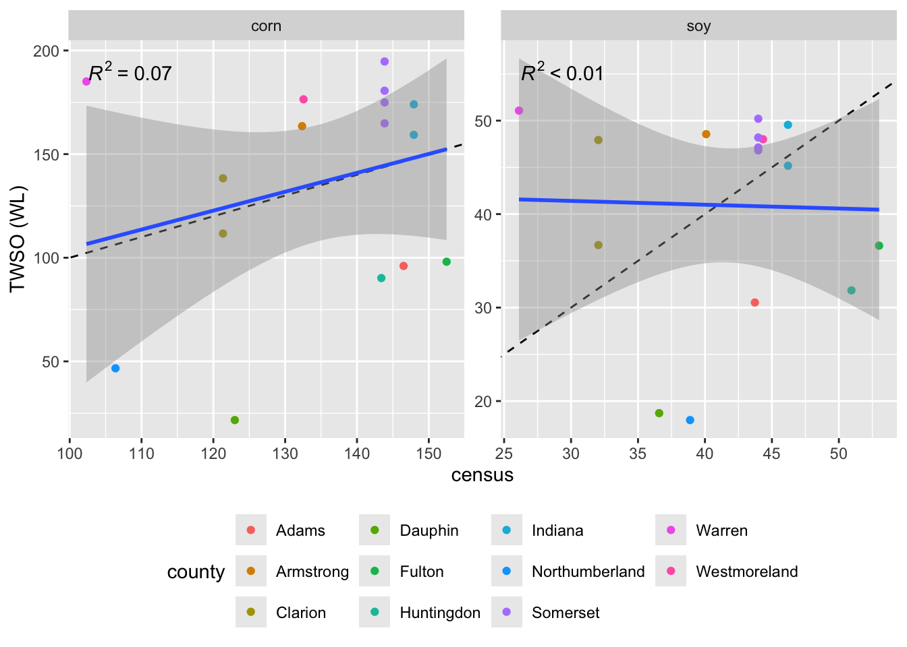
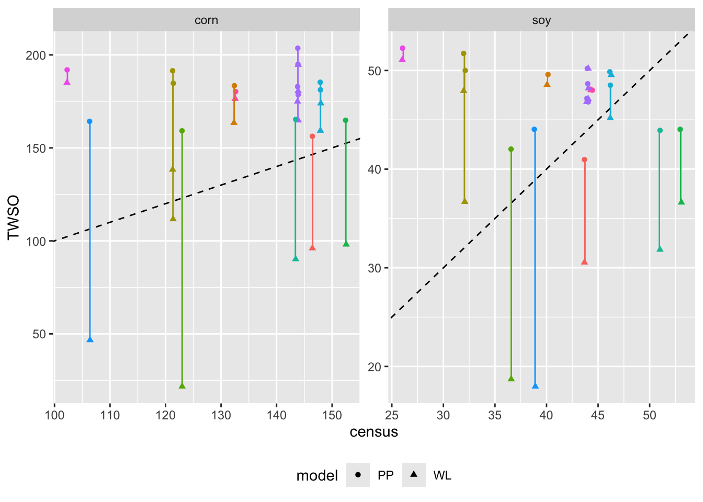

| name | huc12 | county |
|---|---|---|
| North Branch Two Lick Creek-Two Lick Creek | 050100070802 | Indiana |
| Hendricks Creek | 050100071003 | Westmoreland |
| Boyd Run-Deer Creek | 050100050903 | Clarion |
| Lake Stonycreek-Rhoads Creek | 050100070301 | Somerset |
| Buffalo Creek | 050200060703 | Somerset |
| South Glade Creek-Casselman River | 050200060706 | Somerset |
| High Point Lake-Casselman River | 050200060709 | Somerset |
| Upper Marsh Creek | 020700090202 | Adams |
| Blue Eye Run-Brokenstraw Creek | 050100011106 | Warren |
| Toby Creek | 050100050703 | Clarion |
| Little Trough Creek | 020503030701 | Huntingdon |
| Schwaben Creek | 020503010502 | Northumberland |
| Lower Cowanshannock Creek | 050100060802 | Armstrong |
| Headwaters Crooked Creek | 050100061001 | Indiana |
| Armstrong Creek | 020503011004 | Dauphin |
| Wooden Bridge Creek | 020503040202 | Fulton |
Potential and water-limited corn and soy production, compared to the 2022 Agricultural Census
Updated for Aug. 20, 2025
Corn and soy production in some PA counties
Watersheds
Example yield plots: North Branch Two Lick Creek-Two Lick Creek
These curves show yield (TWSO) development for unique combinations of soil map units (mukey) and gridMET cells that had cultivation in them. TWSO is total weight storage organs and is in kg/ha.
TWSO is modeled using the water limited (WL) and potential production (PP) models of WOFOST.
Corn

Soy

Calculated harvest for each watershed
The ‘total.area’ value in the following two tables are the number of cultivated pixels according to the crop sequence boundary. Pixels are 30x30m = 900 sqm. The ‘wt.TWSO’ value is a weighted average of TWSO at harvest time across the cultivated pixels in the watershed. The weighting is by the number of pixels for each modeled yield value (i.e., the curves shown in the last section).
I used conversion factors here to convert from kg to bushels for corn and soy. These values were 1 kg corn = 0.039368 bushel and 1 kg soy = 0.0367437 bushel. The conversion from pixel to acre was 1 ha = 2.47105 acre.
Corn harvest
| huc12 | total.area | wt.TWSO.WL | wt.TWSO.PP | bushel.acre.WL | bushel.acre.PP |
|---|---|---|---|---|---|
| 020503010502 | 16827 | 2928.89 | 10313.56 | 46.66 | 164.31 |
| 020503011004 | 12994 | 1360.63 | 9991.45 | 21.68 | 159.18 |
| 020503030701 | 2133 | 5661.14 | 10376.56 | 90.19 | 165.32 |
| 020503040202 | 6692 | 6156.58 | 10349.41 | 98.08 | 164.88 |
| 020700090202 | 6504 | 6027.94 | 9807.50 | 96.04 | 156.25 |
| 050100011106 | 1993 | 11615.27 | 12050.17 | 185.05 | 191.98 |
| 050100050703 | 2881 | 8682.96 | 12018.50 | 138.33 | 191.48 |
| 050100050903 | 520 | 7010.10 | 11595.98 | 111.68 | 184.74 |
| 050100060802 | 3552 | 10262.24 | 11516.46 | 163.49 | 183.48 |
| 050100061001 | 1649 | 9998.98 | 11375.65 | 159.30 | 181.23 |
| 050100070301 | 1574 | 12220.66 | 12782.37 | 194.70 | 203.64 |
| 050100070802 | 2838 | 10922.54 | 11632.70 | 174.01 | 185.33 |
| 050100071003 | 2587 | 11074.54 | 11317.10 | 176.44 | 180.30 |
| 050200060703 | 7553 | 10346.48 | 12236.84 | 164.84 | 194.95 |
| 050200060706 | 10198 | 11335.62 | 11484.09 | 180.60 | 182.96 |
| 050200060709 | 1288 | 10980.70 | 11211.29 | 174.94 | 178.61 |
Soybean harvest
| huc12 | total.area | wt.TWSO.WL | wt.TWSO.PP | bushel.acre.WL | bushel.acre.PP |
|---|---|---|---|---|---|
| 020503010502 | 15789 | 1208.29 | 2961.74 | 17.97 | 44.04 |
| 020503011004 | 12583 | 1258.02 | 2826.42 | 18.71 | 42.03 |
| 020503030701 | 755 | 2141.34 | 2954.25 | 31.84 | 43.93 |
| 020503040202 | 3175 | 2462.97 | 2961.30 | 36.62 | 44.03 |
| 020700090202 | 5449 | 2054.13 | 2755.27 | 30.54 | 40.97 |
| 050100011106 | 601 | 3434.63 | 3514.76 | 51.07 | 52.26 |
| 050100050703 | 2027 | 3223.29 | 3478.95 | 47.93 | 51.73 |
| 050100050903 | 238 | 2467.47 | 3362.46 | 36.69 | 50.00 |
| 050100060802 | 1640 | 3265.39 | 3335.09 | 48.56 | 49.59 |
| 050100061001 | 1303 | 3038.11 | 3262.23 | 45.18 | 48.51 |
| 050100070301 | 233 | 3376.30 | 3376.30 | 50.20 | 50.20 |
| 050100070802 | 1958 | 3332.40 | 3353.37 | 49.55 | 49.86 |
| 050100071003 | 1841 | 3228.88 | 3228.88 | 48.01 | 48.01 |
| 050200060703 | 3062 | 3241.21 | 3272.03 | 48.20 | 48.65 |
| 050200060706 | 8039 | 3169.36 | 3172.42 | 47.13 | 47.17 |
| 050200060709 | 553 | 3148.45 | 3148.45 | 46.82 | 46.82 |
Compare to census
Census data
Bushels per acre for each county was calculated by dividing the harvested quantity by harvested acres in the county for 2022, from the ag census.
| county | corn.census | soy.census |
|---|---|---|
| Adams | 146.49 | 43.73 |
| Armstrong | 132.35 | 40.09 |
| Clarion | 121.34 | 32.04 |
| Dauphin | 122.99 | 36.58 |
| Fulton | 152.48 | 53.01 |
| Huntingdon | 143.39 | 50.94 |
| Indiana | 147.91 | 46.20 |
| Northumberland | 106.38 | 38.89 |
| Somerset | 143.84 | 43.98 |
| Warren | 102.33 | 26.11 |
| Westmoreland | 132.56 | 44.34 |
Comparisons to model
Comparing water limited (WL) to census yields

Comparing water limited (WL) and potential production (PP) results to census yields

| name | county | corn.WL | corn.PP | soy.WL | soy.PP | corn.census | soy.census |
|---|---|---|---|---|---|---|---|
| North Branch Two Lick Creek-Two Lick Creek | Indiana | 174.01 | 185.33 | 49.55 | 49.86 | 147.91 | 46.20 |
| Hendricks Creek | Westmoreland | 176.44 | 180.30 | 48.01 | 48.01 | 132.56 | 44.34 |
| Boyd Run-Deer Creek | Clarion | 111.68 | 184.74 | 36.69 | 50.00 | 121.34 | 32.04 |
| Lake Stonycreek-Rhoads Creek | Somerset | 194.70 | 203.64 | 50.20 | 50.20 | 143.84 | 43.98 |
| Buffalo Creek | Somerset | 164.84 | 194.95 | 48.20 | 48.65 | 143.84 | 43.98 |
| South Glade Creek-Casselman River | Somerset | 180.60 | 182.96 | 47.13 | 47.17 | 143.84 | 43.98 |
| High Point Lake-Casselman River | Somerset | 174.94 | 178.61 | 46.82 | 46.82 | 143.84 | 43.98 |
| Upper Marsh Creek | Adams | 96.04 | 156.25 | 30.54 | 40.97 | 146.49 | 43.73 |
| Blue Eye Run-Brokenstraw Creek | Warren | 185.05 | 191.98 | 51.07 | 52.26 | 102.33 | 26.11 |
| Toby Creek | Clarion | 138.33 | 191.48 | 47.93 | 51.73 | 121.34 | 32.04 |
| Little Trough Creek | Huntingdon | 90.19 | 165.32 | 31.84 | 43.93 | 143.39 | 50.94 |
| Schwaben Creek | Northumberland | 46.66 | 164.31 | 17.97 | 44.04 | 106.38 | 38.89 |
| Lower Cowanshannock Creek | Armstrong | 163.49 | 183.48 | 48.56 | 49.59 | 132.35 | 40.09 |
| Headwaters Crooked Creek | Indiana | 159.30 | 181.23 | 45.18 | 48.51 | 147.91 | 46.20 |
| Armstrong Creek | Dauphin | 21.68 | 159.18 | 18.71 | 42.03 | 122.99 | 36.58 |
| Wooden Bridge Creek | Fulton | 98.08 | 164.88 | 36.62 | 44.03 | 152.48 | 53.01 |